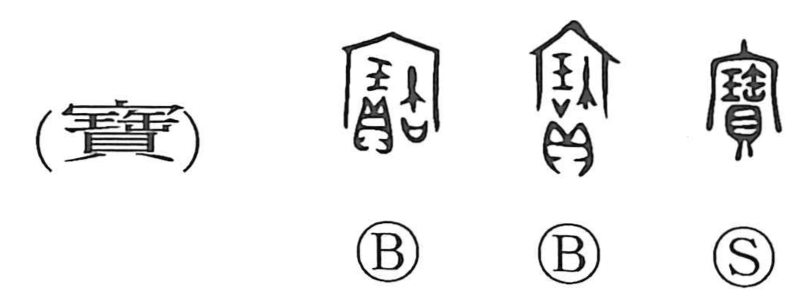

宝

Kun: takara | On: hou
treasure ・ precious object ・ valuables
Explanation
宝 abbreviates 寶. Beneath 宀, the roof of an ancestral sanctuary, the older graph places 玉, jade, and 貝, cowries, together with 缶, an earthen vessel that supplies the sound. The objects are valuables presented in the shrine.
Bronze dedications call their vessels 寶, treasured ritual objects. The character begins among things treasured for sacred use. The phonetic 缶 may preserve the memory of an earlier use of pottery in such ceremonies.
From treasured offerings come treasure and precious possessions generally. The same reverence extends to what belongs to a deity or sovereign, producing honorific uses for a ruler's throne, command, or carriage, and to anything regarded as especially important.